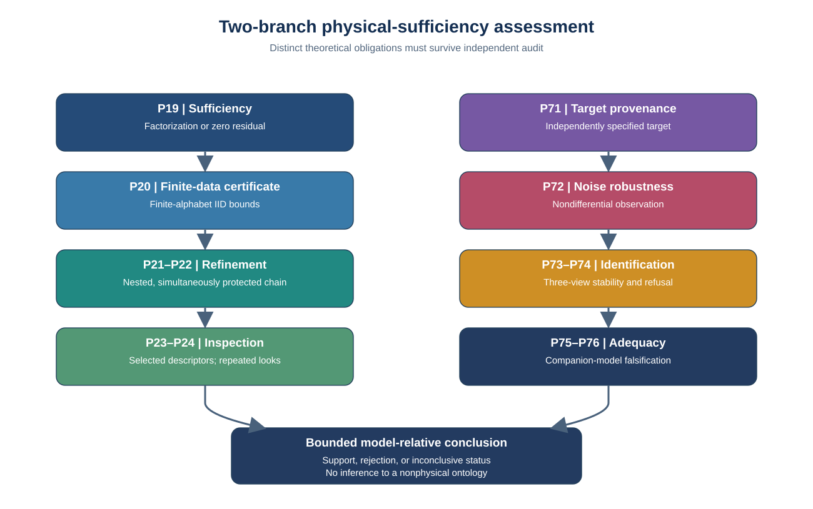
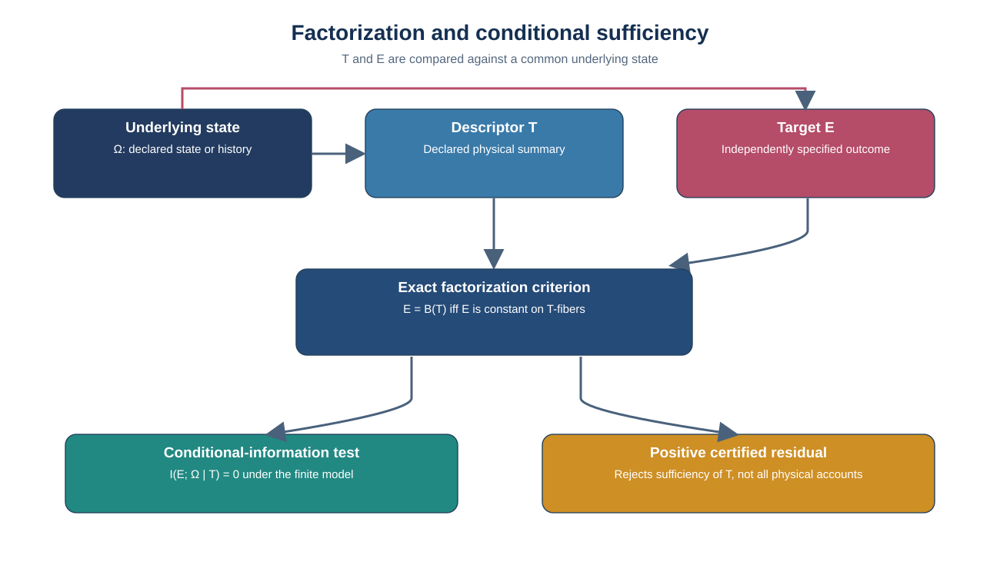
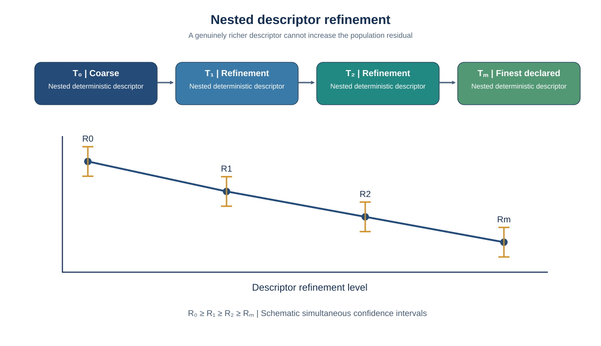
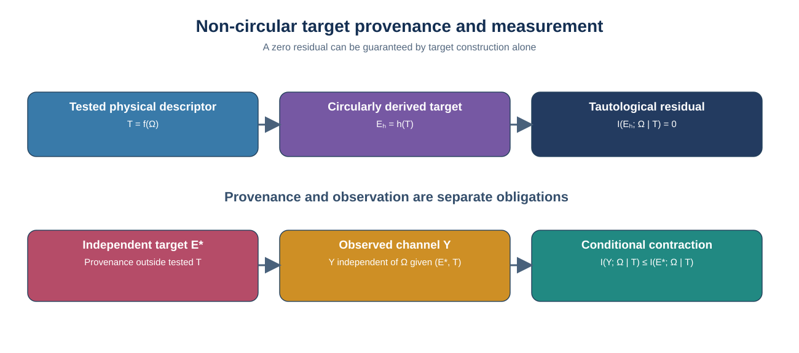
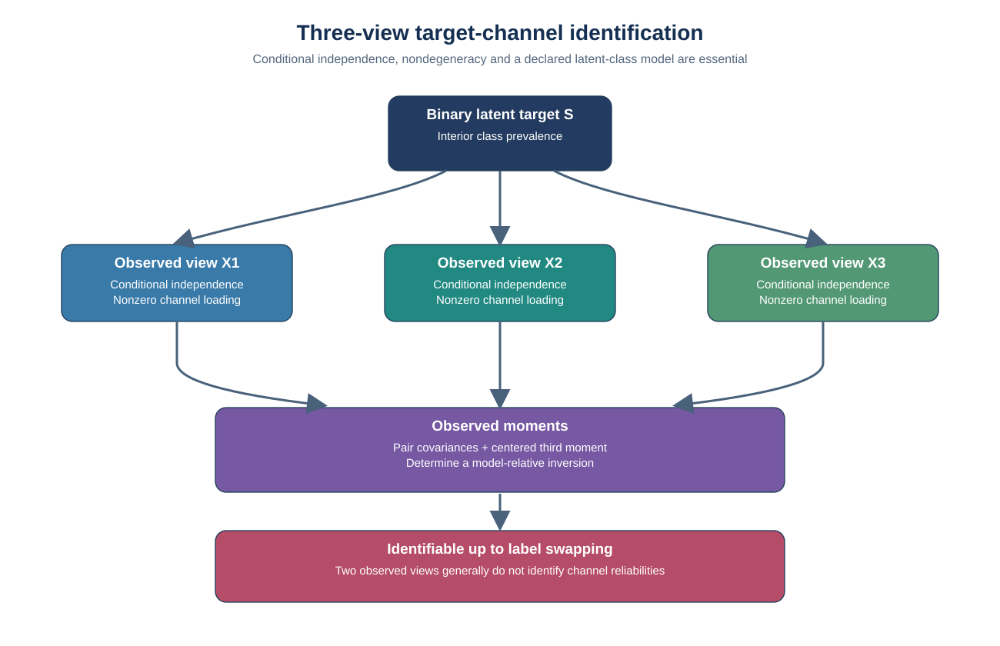
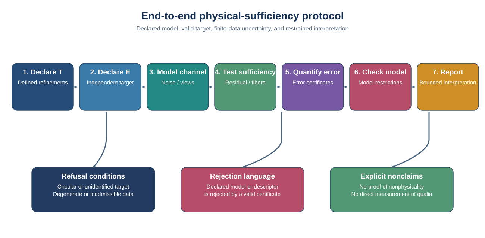

Research II-C: adaptive evidence and e-processes
← Mathematical Consciousness Bridge · Research Map
Research II-A: paper evidence guide
Preparation status: This is a manuscript evidence map, not a notice of journal acceptance or an independent certification of all proofs. No empirical access to subjective experience is claimed.
Working manuscript: Falsifiable Physical Sufficiency for Experiential Targets: Non-Circular Provenance, Measurement Robustness, and Finite-Data Certification.
What the paper tests
A physical or computational descriptor is declared in advance. The target must be independently specified, its observation process must be modeled, and finite-data uncertainty must be accounted for. Rejecting sufficiency of one descriptor does not reject all richer physical descriptions.
Theorem and evidence map
| Research obligation | Primary formal record |
|---|---|
| Physical factorization and screening-off | P19 |
| IID finite-alphabet confidence bounds | P20 |
| Independent target provenance | P71 |
| Noisy target measurement | P72 |
| Three-view binary latent identification | P73 |
| Finite-data channel recovery | P74 |
A transparent synthetic demonstration
For two independent fair binary coordinates Ω=(A,B), let T=A and E=B. Then I(E;Ω|T)=1 bit. If a noisy report Y flips B with probability 0.2 independently, the observed residual becomes 1 − h₂(0.2) ≈ 0.278072 bits. If instead E=T by definition, the residual is zero without independent evidence. These are population identities, not participant data.
Rechecked numerical certificates
Independent arithmetic reproduces the synthetic P20 lower confidence bound of 0.2347015435 nats for n=10,000 under the declared IID finite-alphabet model. P74's conservative sufficient sample-size threshold is 106,322 for a minimum covariance magnitude of 0.25 at 95% confidence. These are calculations, not participant results or full test-suite reproduction. See the numeric audit.
Why measurement strength matters
A finite-sample guarantee can be mathematically sound yet difficult to use when the measurements are weak. In a synthetic three-view study, the P74 covariance gate passed consistently for stronger measurement channels at large sample sizes, but did not pass for a weak channel even at 100,000 observations. This is a limitation of conservative certification, not proof that the target is absent. Shared rater bias or correlated measurement errors would also require independent model checks. Read the study's full assumptions and results.
Figures and methodological architecture
The diagrams below are vector reconstructions of the six manuscript figures. Solid connectors show declared mathematical or methodological dependencies, not empirical evidence of an experiential ontology. Figure 1 includes P75-P76 as explicitly downstream companion-work context, not as new theorems established in the Research II-A manuscript. They retain the manuscript figure numbering and should be read with the theorem assumptions.






Submission-stage interpretation guide
Non-rejection does not establish sufficiency. A zero-inclusive lower confidence certificate is inconclusive; a positive lower bound rejects only the declared descriptor relative to its target and assumptions. An affirmative bounded equivalence claim would require a prespecified tolerance, a calibrated upper bound and independent psychological construct validation.
Distinguish the simulation endpoints. A positive residual-certificate frequency differs from passage of the three-view measurement nondegeneracy gate. Neither is evidence from psychological participants. Dependence, post hoc target changes and observation-model misspecification require separate analyses.
What remains open
- Independent construct validity of an experiential target
- Empirical adequacy of a particular noisy measurement model
- Verification of every finite-sample and numerical claim on a pinned revision
- Application beyond declared finite-alphabet sampling assumptions
- The physical-to-experiential explanatory bridge itself
See the complete evidence and audit guide, reproducibility instructions, and Research Map.